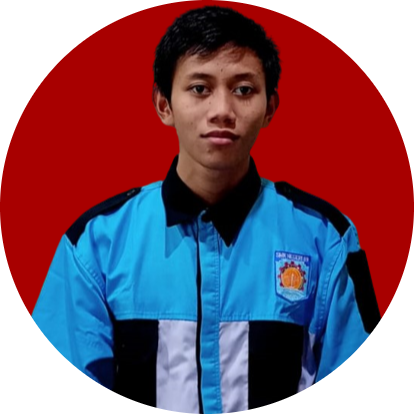

DELTA FERDIAN SINGGIH
IT SUPPORT
- From Pulo Jahe - East Jakarta
- 19/12/2005
- SMKN 69 JAKARTA
INTRODUCE MY SELF
Nama Saya adalah Delta Ferdian Singgih.
Saya sedang mempelajari ADMINISTRASI SISTEM JARINGAN TI (IT NSA), pemrograman website, dan Perakitan PC.
Saya tertarik dengan Networking dan Web Programming karena saya yakin dengan hardskill dan softskill saya. Saya dapat bekerja dengan tim maupun mandiri.
Selain itu, saya sedang mempelajari Jobdesk menjadi IT Support.
EXPERIENCE
BNSP
2023
SMKN69 JAKARTA
Saya mengikuti perlombaan BNSP IT NSA bidang Networking tentang konfigurasi Mikrotik dan memblokir DNS YOUTUBE dan memperoleh sertifikat BNSP
Sertifikat BNSP NETWORKING
Student
2021 - 2025
SMKN 69 JAKARTA
SKILLS
- HTML
- CSS
- Cisco Packet Tracer
- IT
PROJECTS
Website Rumah Sakit
2022
Frond-end Developer
Saya membuat website ini secara tim dan jobdeesk saya menjadi Front-end Developer
Tugas saya adalah:
- Membuat Heading, Navbar, dan Icon Website
- Membuat Bingkai Dokter
- Membuat alur pembuatan website agar pembuatan website tersebut dapat terancang dengan baik
Website CV Responsif
2024
watashidelta.vercel.app
Frond-end Developer
Saya membuat website CV yang responsif berbasis HTML, CSS, dan Javascript.
Isi CV tersebut adalah:
- Tentang Saya
- Pengalaman
- Skill Yang dikuasai
{kind=link}
{kind=link}
{kind=link}